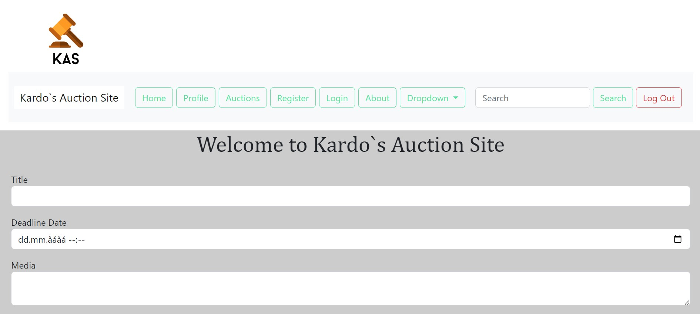
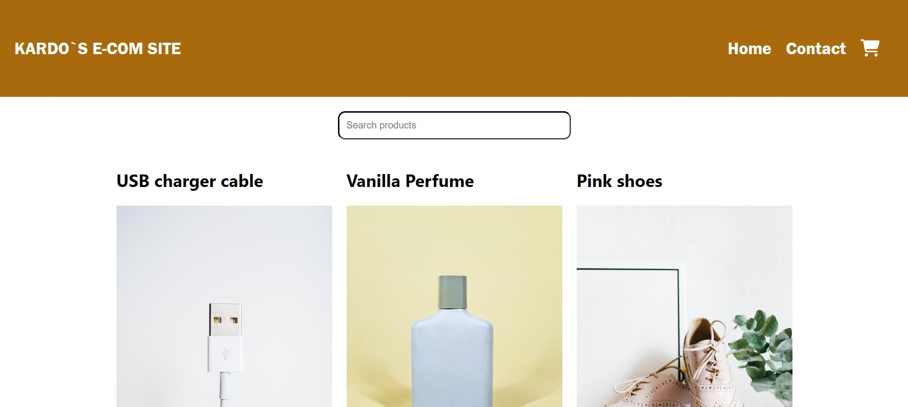
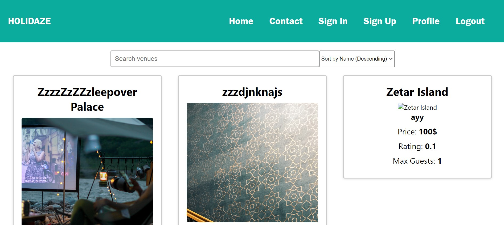
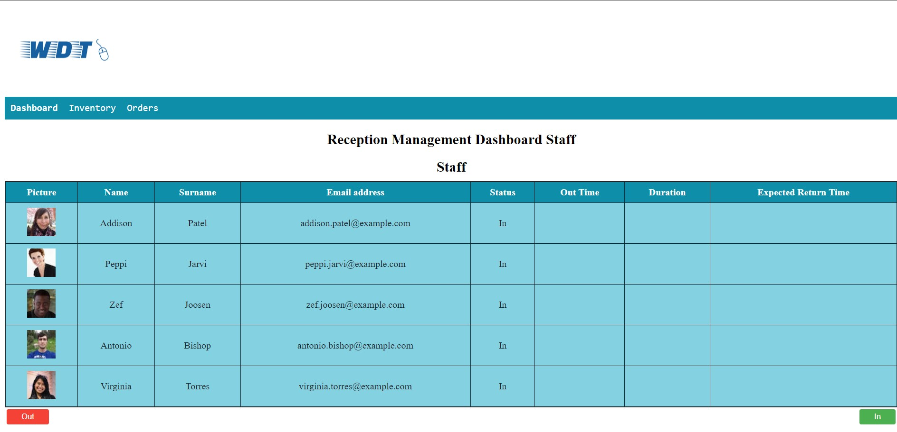
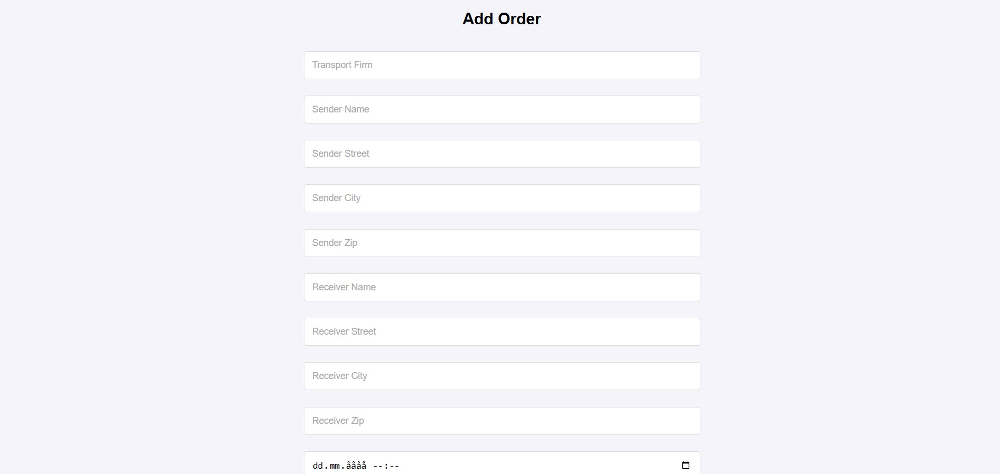

Hi, my name is Kardo Kiyani. Welcome to my portfolio!

On this page you can take a look at my major projects from me studying Front-End and Back-end at Noroff. Click on them and have a look at each site, hope you have a good experience!
My Projects
Rainy Days

This site is called "Rainy Days" It is my first project at Noroff, it`s a e-commerce store where users can buy Rainy Days outdoor jackets.
Community Science Museum

This site is called "Community Science Museum" It was my second project at Noroff, it was the semester project for the first semester. It`s a museum online website for adults and kids where users can buy tickets or look when the museum is open to visit.
Kardo`s Travel Blog

This site is called "Kardo`s Travel Blog" It was my third project at Noroff, it was my exam for my first year, the site is a travel blog site where users can read about different locations around the world.
Kardo`s Auction Site
This site is called "Kardo`s Auction Site". It was my first biggest project in my second year at Noroff. The site is a auction site where you can find different auction products which you can bid on.
Kardo`s Ecom Site
This site is called "Kardo`s Ecom Site". It was my second biggest project in my second year at Noroff. The site is a e-com site where you can look at different products and put them in your cart and them buy the profuct.
Holidaze
This site is called "Holidaze" It was my third and last project at Noroff, basically my second exam at Noroff. On this site the user can find many different different location whch they can book to travel too. And the user can also login as a venue manager, if they do that they can create their own venues where they can edit and delete anytime.
WDT
This site is called "WDT" It was my semester project in my Back-end study in which I got a grade B on it. On this page, me as a developer have been contacted by WeDeliverTECHTM company. The company specializes in selling technology components and delivering them directly to customers. They would like a web app that has a Reception Management dashboard to manage the following: Staff member out-of-office logging and Deliveries tracking.
Noroff EP e-commerce
This site is called "Noroff EP e-commerce" It was my exam in my study Back-end study in which I got a grade C on it. On this project, a new customer with an existing e-commerce site using static data wants to convert their website to instead use a back-end system that includes APIs and a database to showcase their products for customers to purchase. They also require an Admin front-end, which uses the back-end system to manage the data.
Routes-orders
Developed a full-stack system to manage and optimize delivery routes by grouping multiple orders. Built using React for the frontend, Node.js with Express.js for the backend, and MySQL for data management. The solution enables users to sort, modify, and efficiently organize orders within each route for improved logistics